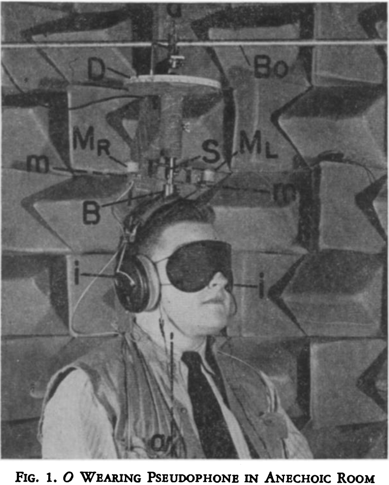

Shifts in Binaural Localization after Prolonged Exposures to Atypical Combinations of Stimuli
Author: Richard Held
Date: December, 1955
Experiment 1
Subjects Tested: 3
...Os with displaced aural axes spent periods of 7 hr. in their normal environments. At the end of this period when a single source was sounded each O reported either that there appeared to be two sources or that the source could be localized in two different directions. Comparison of measurements showed shifts of localization averaging about 10° and separations of the two apparent sources ranging from 8° to 21°. Although the Os remained unaware of errors of localization caused by the rotation of their aural axes, the [shifts in head rotation] tended to correct for these errors.

Experiment 2
Subjects Tested: 6
...the conditions of exposure (motion of O and location of sound-sources) were controlled in an attempt to discover some of the aspects of atypical stimulation that produce the shifts. Each of 6 Os went through 8 1-hr. sessions of controlled exposure. Fourteen conditions of exposure were presented in a factorial design. The results show that invariance of the time-difference with translation of the head in a particular direction is the critical factor under the experimental conditions. Shifts averaging 10° were produced in 1 hr. under the optimal conditions of exposure
Design Decisions
The author's use of a pseudophone, which allowed displacement of sound sources, is directly replicatable in VR, however movement is difficult to simulate. Thus, testing of varying proprioreceptive stimuli is still difficult, however could be overcome with a device such as the Hololens.